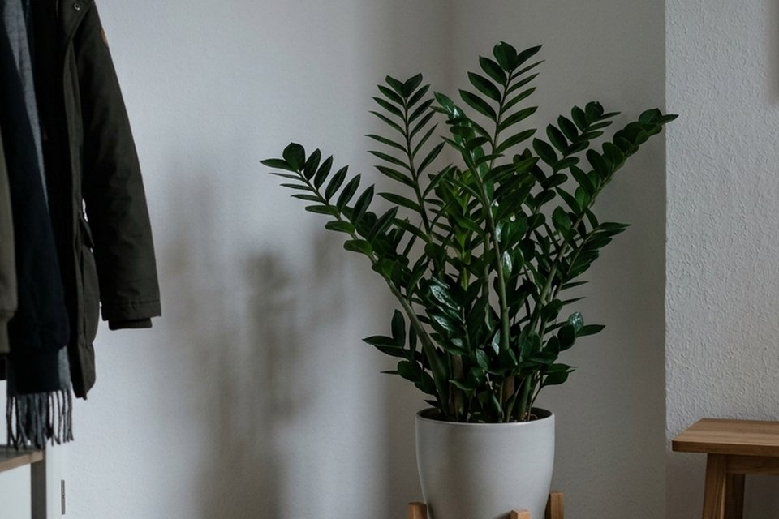

Pflanzen für dunkle Ecken: 8 Zimmerpflanzen für wenig Licht
Flur, Nordzimmer oder die Ecke weit weg vom Fenster: Viele Pflanzen gehen dort ein – diese acht kommen mit wenig Licht gut zurecht. Ganz ohne Licht wächst allerdings keine Pflanze; ein heller Raum in der Nähe oder etwas Tageslicht von der Seite reicht aber.
Die 8 Pflanzen
1. Zamioculcas (Glücksfeder)
Die Pflanze aus dem Bild und die robusteste von allen. Sie speichert Wasser in ihren dicken Stielen und verträgt wenig Licht und vergessenes Gießen. Alle 2–3 Wochen gießen, im Winter noch seltener.
ca. 15–40 €
2. Bogenhanf (Sansevieria)
Aufrechte, feste Blätter, fast unzerstörbar. Wächst im Dunkeln langsam, bleibt aber schön. Sehr sparsam gießen.
ca. 10–30 €
3. Efeutute (Epipremnum)
Hängt oder rankt, wächst auch bei wenig Licht schnell. Ideal für ein hohes Regal oder eine Ampel.
ca. 8–20 €
4. Schusterpalme (Aspidistra)
Ein Klassiker für dunkle Treppenhäuser: dunkelgrüne, breite Blätter, verträgt Kühle und Schatten. Ungiftig.
ca. 15–35 €
5. Einblatt (Spathiphyllum)
Weiße Blüten auch im Halbschatten. Lässt die Blätter hängen, wenn es Wasser braucht – und erholt sich nach dem Gießen schnell.
ca. 10–25 €
6. Bergpalme (Chamaedorea)
Eine kleine, zierliche Palme für helle bis halbschattige Ecken. Ungiftig für Haustiere.
ca. 10–30 €
7. Grünlilie (Chlorophytum)
Anspruchslos, bildet Ableger, die man verschenken kann. Mag es halbschattig. Ungiftig.
ca. 5–15 €
8. Kletter-Philodendron (Philodendron scandens)
Herzförmige Blätter, rankt oder hängt, kommt mit wenig Licht aus. Pflege wie die Efeutute.
ca. 8–20 €
Übersicht
| Pflanze | Licht | Gießen | Für Haustiere | ca. Preis |
|---|---|---|---|---|
| Zamioculcas | wenig | selten | giftig | 15–40 € |
| Bogenhanf | wenig | selten | giftig | 10–30 € |
| Efeutute | wenig | mäßig | giftig | 8–20 € |
| Schusterpalme | wenig | mäßig | ungiftig | 15–35 € |
| Einblatt | halbschattig | regelmäßig | giftig | 10–25 € |
| Bergpalme | halbschattig | regelmäßig | ungiftig | 10–30 € |
| Grünlilie | halbschattig | regelmäßig | ungiftig | 5–15 € |
| Kletter-Philodendron | wenig | mäßig | giftig | 8–20 € |
Richtwerte für Deutschland, Stand November 2026. Die Preise schwanken je nach Händler und Saison.
Für Einsteiger: Zamioculcas oder Bogenhanf – beide verzeihen fast alles.
Mit Katze oder kleinen Kindern: Schusterpalme, Bergpalme oder Grünlilie.
Tipp: Pflanzen in dunklen Ecken brauchen deutlich weniger Wasser. Zu viel Gießen ist dort der häufigste Fehler.
Häufige Fragen
Wachsen Pflanzen im Flur ohne Fenster?
Nur mit Hilfe. Ohne Tageslicht braucht jede Pflanze eine Pflanzenlampe, sonst geht sie nach einigen Monaten ein. Mit etwas Licht aus einem Nachbarraum reichen die robusten Arten wie Zamioculcas.
Wie merke ich, dass es zu dunkel ist?
Die Pflanze bildet lange, dünne Triebe mit kleinen Blättern oder verliert Blätter. Dann einen Platz näher am Fenster suchen.
Und für ein gemütliches Wohnzimmer?
Mehr Ideen: Kleines Wohnzimmer gemütlich machen.